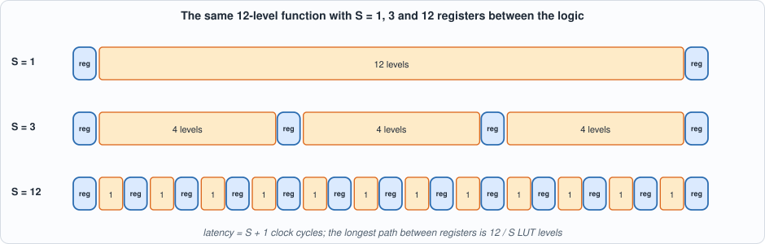
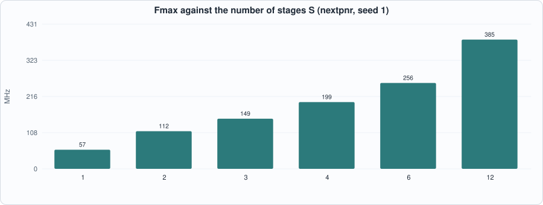
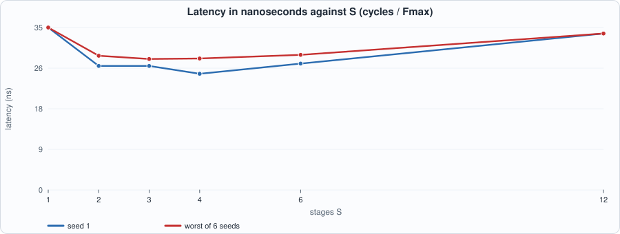
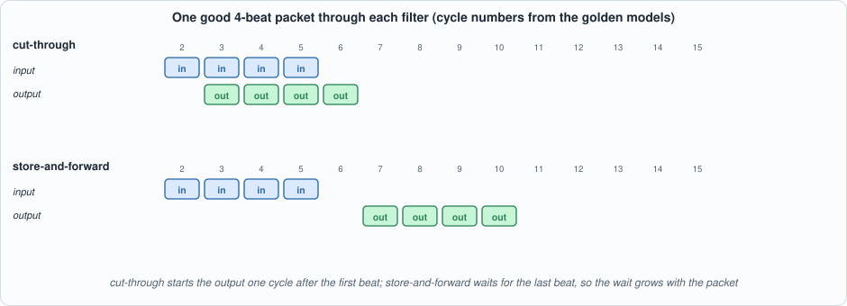
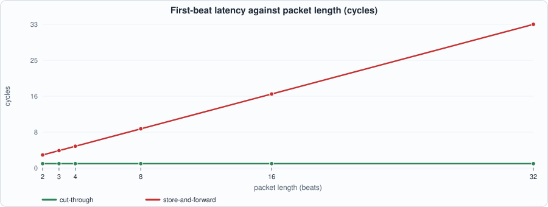
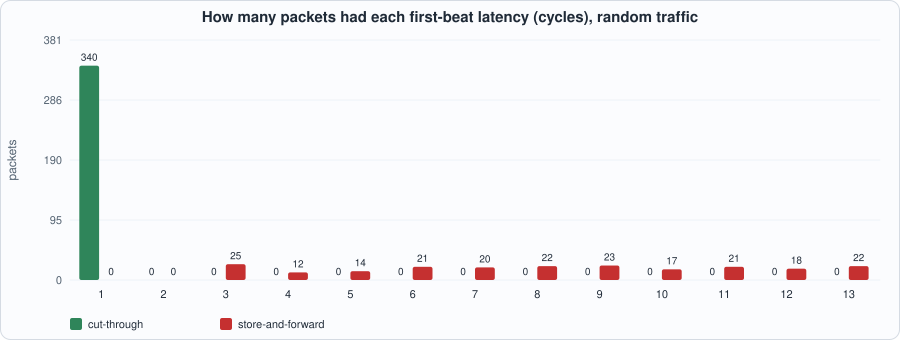

4. Latency as a Budget: Pipelines, Cut-Through Against Store-and-Forward, and Determinism¶
About the kestrels in this picture
- Nankeen kestrel (Falco cenchroides) is found across Australia and nearby islands. It hovers over open country and grassland, and often hunts along roadsides and fields.
- Common kestrel (Falco tinnunculus) ranges across Europe, Asia and Africa. It is famous for hovering: it faces the wind and holds its head almost still while its body adjusts, searching the ground below before it drops onto prey. A much-cited study reported that voles' scent trails reflect ultraviolet light, which kestrels may be able to see.
The scene is imaginary and the birds are stylised drawings.
What you will see: what latency means in this book (a count of clock cycles at a stated clock, never a wire-to-wire time), how cutting one function into more pipeline stages raises the clock but adds cycles, so the latency in nanoseconds falls, goes flat and rises again (measured), and two packet filters with the same specification and opposite latency: a cut-through filter whose latency is one cycle for every packet, and a store-and-forward filter whose latency grows with the packet. Both are checked cycle for cycle against golden models, and both models are checked against the specification.
What you need to know first: Chapters 1 to 3 (the LUT and flip-flop, valid/ready, the period equation). Nothing about networking is assumed beyond "a packet is a sequence of beats".
What this chapter builds: rtl/pipe.sv (a function in S stages), rtl/pktfilt.sv (ct_filter and sf_filter), model/lat_gold.py (the golden models, the specification and the stimulus), the testbenches tb/pipe_tb.sv and tb/pkt_tb.sv, and tools/ch04_example_a.py, tools/ch04_example_b.py, tools/ch04_run.py, tools/mut_ch04.py.
What latency is, here¶
Latency is the number of clock cycles between an input and the output that depends on it. Throughput is how many inputs are accepted per cycle. Jitter is variation of the latency from one input to the next. A design built as a pipeline of registered circuits has a latency that is an integer, fixed by its structure; its time is that integer times the clock period.
This book states latency in cycles at a stated clock. It never quotes a "wire-to-wire" nanosecond figure for a design: that would include the board, the physical interface and the exchange's gateway, none of which a simulation or the open tools can measure. What the book can measure is the part inside the FPGA, in cycles, and the clock the open tools say the design can reach (Chapter 3's "nextpnr's numbers, not signoff" applies to every nanosecond figure below).
A latency budget is the sum over the stages of a path of cycles x period. Writing one down before building (a table of stages, each with its cycles) is the discipline: it shows which stage to attack and, above all, which stages can be given more cycles without hurting.
Pipelining, and the point at which it stops helping¶
Chapter 3 showed that the clock period of a register-to-register path grows linearly with its logic depth: period = 0.91 ns + 1.29 ns x levels on this device. If the logic between two registers is halved by inserting a register in the middle, the period falls, but the output arrives one cycle later. The question is what that does to the time.
rtl/pipe.sv is the experiment. It computes a function of 12 rounds, each one LUT4 level (the mixing function of Chapter 3's tchain), and places a register after every 12 / S rounds, for S = 1, 2, 3, 4, 6 or 12. The input is registered first, so that every logic path starts and ends at a flip-flop (this is what a timing tool measures; a path from a pin to a register is not a clock path, and with no input register nextpnr found no path at all for S = 1). The latency is exactly S + 1 cycles.
// Chapter 4: a deep function cut into S pipeline stages. The function is R rounds of one LUT level each (the same mixing as Chapter 3's tchain): x' = x ^ (x[+1] & x[+3]) ^ x[+7], bit positions mod W.
// The input is registered first (so that every logic path starts and ends at a flip-flop, which is what a timing tool measures), and a register is placed after every R/S rounds: the logic between registers is R/S LUT levels and the latency is exactly S + 1 clock cycles. R must be a multiple of S. A valid bit travels beside the data.
module pipe #(parameter int W = 16, parameter int R = 12, parameter int S = 3) (
input logic clk, input logic rst, input logic in_valid, input logic [W-1:0] in_data, output logic out_valid, output logic [W-1:0] out_data);
localparam int G = R / S; // rounds per stage
function logic [W-1:0] rnd(input logic [W-1:0] x); // (assignment to the function name, not `return`: Yosys 0.33 does not accept `return`)
logic [W-1:0] y;
begin
for (int j = 0; j < W; j++) y[j] = x[j] ^ (x[(j + 1) % W] & x[(j + 3) % W]) ^ x[(j + 7) % W];
rnd = y;
end
endfunction
logic [W-1:0] qi; logic vi; // the input register
always_ff @(posedge clk) begin qi <= in_data; vi <= rst ? 1'b0 : in_valid; end
logic [W-1:0] q [S]; // q[s] is the register after stage s
logic v [S];
for (genvar s = 0; s < S; s++) begin : stg
logic [W-1:0] a, t; logic av;
assign a = (s == 0) ? qi : q[(s == 0) ? 0 : s - 1];
assign av = (s == 0) ? vi : v[(s == 0) ? 0 : s - 1];
always_comb begin
t = a;
for (int r = 0; r < G; r++) t = rnd(t);
end
always_ff @(posedge clk) begin
q[s] <= t;
v[s] <= rst ? 1'b0 : av;
end
end
assign out_data = q[S - 1]; assign out_valid = v[S - 1];
endmodule
Two notes on the code, both about the tools rather than the idea: Yosys 0.33 does not accept return in a function (the result is assigned to the function's name), and Icarus does not allow one array to be driven partly by assign and partly by always_ff, which is why the input register is a separate pair of signals and not element 0 of the array.
The golden model and the testbench¶
The model (pipe_f, pipe_cycles in model/lat_gold.py) computes the function from its definition on integers and delays each valid input by S + 1 cycles; the testbench compares out_valid and out_data with it every cycle of a random stream. A second property is built in: valid is high in no cycle other than the delayed copies of valid inputs, so a stale or phantom output fails. The valid bit is held high during reset (reset must discard it; an earlier version of the testbench held it low, and one mutant survived because of that).
// Chapter 4 testbench for pipe: a random valid/data stream against the golden model, cycle by cycle (valid is held high during reset, which must discard it). Every output must appear exactly S + 1 cycles after its input, carry the function of that input, and the valid bit must be low in every other cycle. Defines: S (stages), NC (cycles).
`timescale 1ns/1ps
`ifndef S
`define S 3
`endif
`ifndef NC
`define NC 2000
`endif
module pipe_tb;
localparam int NC = `NC;
logic clk = 0, rst = 1, in_valid = 0; logic [15:0] in_data = '0; logic out_valid; logic [15:0] out_data; logic [39:0] vec [0:NC-1]; int errs = 0, k, got = 0;
pipe #(.W(16), .R(12), .S(`S)) dut (.clk(clk), .rst(rst), .in_valid(in_valid), .in_data(in_data), .out_valid(out_valid), .out_data(out_data));
always #5 clk = ~clk;
initial begin
$readmemh("out/pipe_vec.hex", vec);
in_valid = 1; in_data = 16'hBEEF; // the input is VALID during reset: reset must discard it
repeat (3) @(negedge clk); rst = 0; in_valid = 0;
for (k = 0; k < NC; k = k + 1) begin
@(negedge clk); in_valid = vec[k][36]; in_data = vec[k][35:20]; #1;
if (out_valid !== vec[k][16] || (vec[k][16] && out_data !== vec[k][15:0])) begin errs++; if (errs < 6) $display("MISMATCH cycle %0d: valid %b/%b data %h/%h", k, out_valid, vec[k][16], out_data, vec[k][15:0]); end
if (out_valid === 1'b1) got++;
end
if (errs == 0) $display("PASS: S = %0d, %0d cycles, %0d outputs, each exactly S + 1 cycles after its input", `S, NC, got); else $display("FAIL: %0d problems", errs);
$finish;
end
endmodule
Running example A: how many stages?¶
#!/usr/bin/env python3
"""Chapter 4, example A: how many pipeline stages? The same 12-round function cut into S = 1, 2, 3, 4, 6, 12 stages: area (Yosys), Fmax (nextpnr, iCE40 HX8K, seed 1 and the spread over 6 seeds), latency in cycles (exact: S + 1) and in nanoseconds (cycles / Fmax), and the throughput (one item per clock = Fmax items per second). Usage: ch04_example_a.py"""
import os, sys, concurrent.futures as cf
sys.path.insert(0, os.path.dirname(os.path.abspath(__file__))); import flow
SS = (1, 2, 3, 4, 6, 12)
def build(s):
r = flow.synth(["rtl/pipe.sv"], "pipe", "ice40", tag=f"p{s}", params={"S": s}); return r
def fm(args): s, seed = args; return flow.pnr(f"out/p{s}.json", "ice40", 400, seed)["fmax"]
if __name__ == "__main__":
with cf.ThreadPoolExecutor(4) as ex: syn = list(ex.map(build, SS)); runs = list(ex.map(fm, [(s, sd) for s in SS for sd in range(1, 7)]))
F = {s: runs[i * 6:(i + 1) * 6] for i, s in enumerate(SS)}
print("== latency, throughput and area of a 12-level function cut into S stages (W = 16 bits; asked for 400 MHz so that nextpnr works as hard as it can)")
print(f" {'S':>3s} {'levels/stage':>12s} {'LUTs':>5s} {'FFs':>5s} {'Fmax (seed 1)':>14s} {'Fmax worst of 6':>16s} {'latency cycles':>15s} {'latency ns (seed 1)':>20s} {'latency ns (worst of 6)':>24s}")
best = None
for s, y in zip(SS, syn):
f1 = F[s][0]; fw = min(F[s]); cyc = s + 1; l1 = 1000 * cyc / f1; lw = 1000 * cyc / fw
print(f" {s:3d} {12 // s:12d} {y['luts']:5d} {y['ffs']:5d} {f1:11.1f} MHz {fw:13.1f} MHz {cyc:15d} {l1:17.1f} ns {lw:21.1f} ns")
if best is None or lw < best[1]: best = (s, lw)
mid = [1000 * (t + 1) / min(F[t]) for t in SS if 2 <= t <= 6]
print(f"\n lowest latency in nanoseconds with the worst-of-6 clock: S = {best[0]} ({best[1]:.1f} ns); for S = 2 to 6 the worst-of-6 latency lies between {min(mid):.1f} and {max(mid):.1f} ns, a range smaller than the seed-to-seed spread below")
print(" adding stages raises Fmax but adds a cycle each, and the clock-to-q, setup and routing of each stage are paid S + 1 times: the latency in ns falls steeply from S = 1, is flat over the middle, and rises again when each stage holds one level")
print("\n== the spread over six placer seeds (Fmax, MHz)")
for s in SS: print(f" S = {s:2d}: " + " ".join(f"{f:6.1f}" for f in F[s]) + f" spread {100 * (max(F[s]) - min(F[s])) / (sum(F[s]) / 6):.1f}%")
To compile and run: python3 tools/ch04_example_a.py (about a minute). Recorded output:
== latency, throughput and area of a 12-level function cut into S stages (W = 16 bits; asked for 400 MHz so that nextpnr works as hard as it can)
S levels/stage LUTs FFs Fmax (seed 1) Fmax worst of 6 latency cycles latency ns (seed 1) latency ns (worst of 6)
1 12 192 34 57.0 MHz 57.0 MHz 2 35.1 ns 35.1 ns
2 6 192 51 112.1 MHz 103.5 MHz 3 26.8 ns 29.0 ns
3 4 192 68 149.3 MHz 141.6 MHz 4 26.8 ns 28.3 ns
4 3 192 85 198.9 MHz 175.9 MHz 5 25.1 ns 28.4 ns
6 2 192 119 256.0 MHz 239.7 MHz 7 27.3 ns 29.2 ns
12 1 192 221 385.1 MHz 385.1 MHz 13 33.8 ns 33.8 ns
lowest latency in nanoseconds with the worst-of-6 clock: S = 3 (28.3 ns); for S = 2 to 6 the worst-of-6 latency lies between 28.3 and 29.2 ns, a range smaller than the seed-to-seed spread below
adding stages raises Fmax but adds a cycle each, and the clock-to-q, setup and routing of each stage are paid S + 1 times: the latency in ns falls steeply from S = 1, is flat over the middle, and rises again when each stage holds one level
== the spread over six placer seeds (Fmax, MHz)
S = 1: 57.0 59.1 60.2 57.1 61.7 60.3 spread 7.9%
S = 2: 112.1 112.6 103.5 114.7 104.9 112.3 spread 10.1%
S = 3: 149.3 150.7 145.3 141.6 172.3 163.8 spread 20.0%
S = 4: 198.9 195.2 192.8 175.9 187.2 187.7 spread 12.1%
S = 6: 256.0 248.9 239.7 276.3 252.8 249.8 spread 14.4%
S = 12: 385.1 422.6 422.6 408.2 408.2 400.2 spread 9.2%

Figure 4.1: the same function cut into 1, 3 and 12 stages. More stages, shorter paths, more registers, more cycles.
Figure 4.2: Fmax rises with the number of stages (57 to 385 MHz, seed 1).
Figure 4.3: latency in nanoseconds against stages. It falls steeply from one stage, is flat over the middle, and rises again.Reading the output (measured).
- Area barely changes: 192 LUTs in every row (12 levels x 16 bits); only the flip-flops grow, from 34 to 221, because each stage registers the whole 16-bit word and its valid bit.
- Fmax grows with
Sfrom 57 MHz (12 levels between registers) to 385 MHz (one level), but not in proportion: twelve times the stages gives under seven times the clock, because each stage still pays clock-to-q, setup and a route. - Latency in nanoseconds falls, flattens and rises: 35.1 ns at
S= 1 (seed 1), about 25 to 27 ns forS= 2 to 6, and 33.8 ns atS= 12. With the worst of six seeds,S= 2 to 6 lie between 28.3 and 29.2 ns: a difference smaller than the seed-to-seed spread of Fmax (up to 20%) in the table that follows. The data support "use a middle number of stages" and do not support choosing between 2 and 6. - Throughput is one item per cycle in every row, so it equals the clock: it rises with
S, while the latency in ns does not fall further. Pipelining always buys throughput; it buys latency only while the logic delay dominates.
What this does and does not say
One device, one function, nextpnr's estimate. The shape (a steep fall, a flat floor, a rise) is the general result; the position of the floor depends on the ratio of the logic delay to the per-stage overhead, which is device-specific. Chapter 5 returns to the cost side: what each extra register costs in area.
Cut-through and store-and-forward¶
A packet arrives as a sequence of beats. A stage that must decide something about the packet has two ways to work.
- Store-and-forward waits for the whole packet, decides, and then emits it (or discards it). It can look at everything before deciding, and it never emits a bad packet; its latency is at least the packet's length.
- Cut-through starts emitting after the first beat. Its latency is a constant, but it must decide early: what is known only at the end (a checksum) is raised after the packet has already left, as a flag on the last beat, which the receiver must obey.
Both are specified by one rule set, so that one specification can judge both:
A packet of 32-bit beats is dropped unless the low byte of its first beat is
0xA5. A kept packet is bad if the sum of the low 16 bits of all its beats is not 0 modulo 65,536, and good otherwise.
(The header test needs only the first beat, so cut-through can apply it immediately; the checksum needs the last, so cut-through can only flag it.) The designs:
// Chapter 4: two packet filters with the same specification and opposite latency.
// Packets are streams of 32-bit beats (in_valid, in_data, in_last). A packet is DROPPED unless the low byte of its first beat is 0xA5; a kept packet is BAD if the sum of the low 16 bits of all its beats is not 0 (mod 65536), GOOD otherwise.
// ct_filter (cut-through): forwards each beat one clock later. The drop decision needs only the first beat, so it is made at once; the checksum needs the whole packet, so a kept packet is forwarded speculatively and out_bad is raised on its LAST beat if the sum is wrong. A downstream stage must discard a packet whose last beat has out_bad. Latency: 1 cycle for every beat of every packet.
// sf_filter (store-and-forward): stores the whole packet, decides at the last beat, and streams only GOOD packets out, one beat per cycle. It never emits a bad packet. in_ready is low while a packet drains (one buffer). Latency: grows with packet length.
// verilator lint_off DECLFILENAME
module ct_filter (
input logic clk, input logic rst, input logic in_valid, input logic [31:0] in_data, input logic in_last,
output logic out_valid, output logic [31:0] out_data, output logic out_last, output logic out_bad);
logic inpkt, keep; logic [15:0] acc;
logic first, keep_n; logic [15:0] acc_n;
assign first = !inpkt;
assign keep_n = first ? (in_data[7:0] == 8'hA5) : keep;
assign acc_n = (first ? 16'd0 : acc) + in_data[15:0];
always_ff @(posedge clk) begin
if (rst) begin out_valid <= 1'b0; out_last <= 1'b0; out_bad <= 1'b0; inpkt <= 1'b0; keep <= 1'b0; acc <= 16'd0; out_data <= 32'd0; end
else if (!in_valid) begin out_valid <= 1'b0; out_last <= 1'b0; out_bad <= 1'b0; end
else begin
out_valid <= keep_n; out_data <= in_data; out_last <= in_last; out_bad <= in_last && keep_n && (acc_n != 16'd0);
inpkt <= !in_last; keep <= keep_n; acc <= acc_n;
end
end
endmodule
module sf_filter #(parameter int DEPTH = 32) (
input logic clk, input logic rst, input logic in_valid, input logic [31:0] in_data, input logic in_last, output logic in_ready,
output logic out_valid, output logic [31:0] out_data, output logic out_last, output logic out_bad);
localparam int AW = $clog2(DEPTH);
logic [31:0] buffer [DEPTH]; logic [AW:0] n, rd, total; logic [15:0] acc; logic drain; logic [7:0] first_lo;
logic [15:0] acc_n; logic good;
assign in_ready = !drain;
assign out_bad = 1'b0;
assign acc_n = acc + in_data[15:0];
assign good = (((n == '0) ? in_data[7:0] : first_lo) == 8'hA5) && (acc_n == 16'd0);
always_ff @(posedge clk) begin
if (rst) begin n <= '0; rd <= '0; total <= '0; acc <= 16'd0; drain <= 1'b0; out_valid <= 1'b0; out_last <= 1'b0; out_data <= 32'd0; first_lo <= 8'd0; end
else if (drain) begin
out_valid <= 1'b1; out_data <= buffer[rd[AW-1:0]]; out_last <= (rd == total - 1'b1); rd <= rd + 1'b1;
if (rd == total - 1'b1) begin drain <= 1'b0; n <= '0; acc <= 16'd0; end
end else begin
out_valid <= 1'b0; out_last <= 1'b0;
if (in_valid) begin
buffer[n[AW-1:0]] <= in_data; if (n == '0) first_lo <= in_data[7:0]; acc <= acc_n;
if (in_last) begin
if (good) begin drain <= 1'b1; rd <= '0; total <= n + 1'b1; n <= n + 1'b1; end
else begin n <= '0; acc <= 16'd0; end
end else n <= n + 1'b1;
end
end
end
endmodule
ct_filter has no backpressure (a cut-through stage cannot hold a stream it is already emitting; its downstream must keep up). sf_filter has one buffer, so it refuses input (in_ready low) while a packet drains.
Three layers of checking¶
The specification is a function (classify in model/lat_gold.py) with no timing. The golden models (CT, SF) are cycle-exact state machines written from the descriptions above, not from the Verilog. The testbench reads a per-cycle vector file made from the model (inputs, and the expected in_ready, out_valid, out_last, out_bad, out_data) and compares every cycle. Checking the models against the specification is a separate step done in Python (Section 3 of the run), over 40 random streams of 100 packets: the cut-through model must output exactly the kept packets with the bad ones flagged, and the store-and-forward model exactly the good ones. That way a wrong model cannot make a wrong design look right.
#!/usr/bin/env python3
"""Chapter 4: independent models. (1) pipe_f: the pipelined function, from its definition. (2) Packet-filter models: the SPECIFICATION of what a packet filter must output (classify), and cycle-exact models of the cut-through and store-and-forward designs, written as state machines from the description, not from the Verilog. (3) Stimulus and vector files.
A packet is a list of 32-bit beats. Rules: the packet is DROPPED unless its first beat has 0xA5 in the low byte; a kept packet is BAD if the sum of the low 16 bits of all its beats (including the first) is not 0 mod 65536, otherwise GOOD."""
import random
M16 = 0xFFFF
def rnd(x, w):
y = 0
for j in range(w): y |= ((x >> j & 1) ^ ((x >> ((j + 1) % w) & 1) & (x >> ((j + 3) % w) & 1)) ^ (x >> ((j + 7) % w) & 1)) << j
return y
def pipe_f(x, w=16, r=12):
for _ in range(r): x = rnd(x, w)
return x
def pipe_cycles(inputs, s, w=16, r=12):
"""inputs: per cycle (valid, data). Returns per cycle (out_valid, out_data) as seen before the clock edge: the input of cycle k appears s + 1 cycles later (an input register plus s stages)."""
out = []
for k in range(len(inputs)):
j = k - s - 1; out.append((1, pipe_f(inputs[j][1], w, r)) if j >= 0 and inputs[j][0] else (0, 0))
return out
def classify(pkt):
"""The specification: 'drop', 'bad' or 'good'."""
if pkt[0] & 0xFF != 0xA5: return "drop"
return "good" if sum(b & M16 for b in pkt) & M16 == 0 else "bad"
def make_packet(rng, n, kind):
"""kind: 'good', 'bad' or 'drop'; n beats (n >= 1). A one-beat 'good' packet cannot exist (its low byte is 0xA5, so its low 16 bits cannot sum to 0): callers ask for 'bad' instead."""
pkt = [rng.getrandbits(32) for _ in range(n)]
if kind == "drop":
while pkt[0] & 0xFF == 0xA5: pkt[0] = rng.getrandbits(32)
return pkt
pkt[0] = (pkt[0] & ~0xFF & 0xFFFFFFFF) | 0xA5
if kind == "good":
assert n >= 2
s = sum(b & M16 for b in pkt[:-1]) & M16; pkt[-1] = (pkt[-1] & ~M16 & 0xFFFFFFFF) | ((-s) & M16)
else:
while classify(pkt) != "bad": pkt[-1] = rng.getrandbits(32)
return pkt
class CT:
"""Cut-through filter: one register stage; the drop decision is made on the first beat, the bad flag is raised on the last beat of a kept packet."""
def __init__(s): s.ov = s.od = s.ol = s.ob = 0; s.inpkt = 0; s.keep = 0; s.acc = 0
def out(s): return (s.ov, s.od, s.ol, s.ob)
def step(s, v, d, l):
if not v: s.ov = 0; s.ol = 0; s.ob = 0; return
first = not s.inpkt; keep = (d & 0xFF) == 0xA5 if first else s.keep; acc = ((0 if first else s.acc) + (d & M16)) & M16
s.ov, s.od, s.ol = int(keep), d, l; s.ob = int(bool(l and keep and acc != 0))
s.inpkt = 0 if l else 1; s.keep = int(keep); s.acc = acc
class SF:
"""Store-and-forward filter: stores the whole packet; at the last beat decides; a good packet is then streamed out one beat per cycle, a bad or dropped one is discarded. in_ready is low while a packet is draining."""
def __init__(s): s.ov = s.od = s.ol = 0; s.buf = []; s.acc = 0; s.drain = 0; s.rd = 0; s.total = 0
def ready(s): return int(not s.drain)
def out(s): return (s.ov, s.od, s.ol, 0)
def step(s, v, d, l):
ov = od = ol = 0
if s.drain:
ov, od, ol = 1, s.buf[s.rd], int(s.rd == s.total - 1)
if s.rd == s.total - 1: s.drain = 0; s.buf = []; s.acc = 0
s.rd += 1
elif v:
s.buf.append(d); s.acc = (s.acc + (d & M16)) & M16
if l:
if (s.buf[0] & 0xFF) == 0xA5 and s.acc == 0: s.drain = 1; s.rd = 0; s.total = len(s.buf)
else: s.buf = []; s.acc = 0
s.ov, s.od, s.ol = ov, od, ol
def schedule(packets, gaps):
"""Per-cycle input list (valid, data, last): packet i's beats back to back, then gaps[i] idle cycles; two idle cycles first."""
ins = [(0, 0, 0)] * 2
for pkt, g in zip(packets, gaps):
for k, b in enumerate(pkt): ins.append((1, b, int(k == len(pkt) - 1)))
ins += [(0, 0, 0)] * g
return ins + [(0, 0, 0)] * 80
def run(model, ins):
"""Returns per cycle (in_ready, out_valid, out_data, out_last, out_bad) as seen before the clock edge."""
m = model(); res = []
for v, d, l in ins:
r = m.ready() if hasattr(m, "ready") else 1; ov, od, ol, ob = m.out(); res.append((r, ov, od, ol, ob)); m.step(v, d, l)
return res
def gen(seed, kind_mix, count, maxlen, dense):
"""Packets and gaps. kind_mix: weights for (good, bad, drop). dense: gaps 0..2 (for the cut-through filter); otherwise gaps are long enough for the store-and-forward filter to drain (gap >= length + 2)."""
rng = random.Random(seed); pk = []; gp = []
for _ in range(count):
n = rng.randint(1, maxlen); kind = rng.choices(["good", "bad", "drop"], kind_mix)[0]
if kind == "good" and n == 1: kind = "bad"
pk.append(make_packet(rng, n, kind)); gp.append(rng.randint(0, 2) if dense else n + 2 + rng.randint(0, 3))
return pk, gp
def write_vectors(path, ins, res):
"""One line per cycle: in_valid in_last in_data(hex) | expected in_ready out_valid out_last out_bad out_data(hex)."""
with open(path, "w") as f:
for (v, d, l), (r, ov, od, ol, ob) in zip(ins, res): f.write(f"{v}{l}{r}{ov}{ol}{ob}{d:08x}{od:08x}\n")
def pipe_vectors(path, s, cycles, seed, w=16, r=12, p_valid=0.7):
"""Random valid/data stream; one line per cycle: in_valid in_data(4 hex) out_valid out_data(4 hex), the outputs as the golden model says. Returns the number of valid outputs."""
rng = random.Random(seed); ins = [(int(rng.random() < p_valid), rng.getrandbits(w)) for _ in range(cycles)]; out = pipe_cycles(ins, s, w, r); n = 0
with open(path, "w") as f:
for (v, d), (ov, od) in zip(ins, out): f.write(f"{v}{d:04x}{ov}{od:04x}\n"); n += ov
return n
// Chapter 4 testbench for ct_filter and sf_filter. Reads a per-cycle vector file made by model/lat_gold.py: inputs (valid, last, data) and the expected outputs of the golden model (in_ready, out_valid, out_last, out_bad, out_data), and compares every cycle. Define SF = 1 tests sf_filter, 0 ct_filter. NC = number of cycles.
`timescale 1ns/1ps
`ifndef SF
`define SF 0
`endif
`ifndef NC
`define NC 1000
`endif
module pkt_tb;
localparam int NC = `NC;
logic clk = 0, rst = 1, in_valid = 0, in_last = 0; logic [31:0] in_data = '0; logic in_ready, out_valid, out_last, out_bad; logic [31:0] out_data;
logic [95:0] vec [0:NC-1]; // each line is 22 hex digits: six flag digits (each 0 or 1), the input beat, the expected output beat
int errs = 0, k, accepted_while_not_ready = 0;
if (`SF) begin : g1 sf_filter dut (.clk(clk), .rst(rst), .in_valid(in_valid), .in_data(in_data), .in_last(in_last), .in_ready(in_ready), .out_valid(out_valid), .out_data(out_data), .out_last(out_last), .out_bad(out_bad)); end
else begin : g0 ct_filter dut (.clk(clk), .rst(rst), .in_valid(in_valid), .in_data(in_data), .in_last(in_last), .out_valid(out_valid), .out_data(out_data), .out_last(out_last), .out_bad(out_bad)); assign in_ready = 1'b1; end
always #5 clk = ~clk;
initial begin
$readmemh("out/pkt_vec.hex", vec);
repeat (2) @(negedge clk); rst = 0;
for (k = 0; k < NC; k = k + 1) begin
@(negedge clk);
in_valid = vec[k][84]; in_last = vec[k][80]; in_data = vec[k][63:32]; #1;
// bit positions: valid 84, last 80, ready 76, out_valid 72, out_last 68, out_bad 64, in_data 63:32, out_data 31:0
if (in_valid && !in_ready) accepted_while_not_ready++;
if (in_ready !== vec[k][76] || out_valid !== vec[k][72] || out_last !== vec[k][68] || out_bad !== vec[k][64] || (vec[k][72] && out_data !== vec[k][31:0])) begin
errs++; if (errs < 6) $display("MISMATCH cycle %0d: ready %b/%b valid %b/%b last %b/%b bad %b/%b data %h/%h", k, in_ready, vec[k][76], out_valid, vec[k][72], out_last, vec[k][68], out_bad, vec[k][64], out_data, vec[k][31:0]);
end
end
if (accepted_while_not_ready != 0) begin errs++; $display("MISMATCH: %0d beats offered while not ready", accepted_while_not_ready); end
if (errs == 0) begin if (`SF) $display("PASS: store-and-forward, %0d cycles against the golden model", NC); else $display("PASS: cut-through, %0d cycles against the golden model", NC); end else $display("FAIL: %0d problems", errs);
$finish;
end
endmodule
The run script¶
#!/usr/bin/env python3
"""Chapter 4: the running designs. (1) lint gate; (2) the pipelined function against its golden model for six stage counts and three traffic densities (Icarus, and Verilator for two of them); (3) the model of the packet filters against the SPECIFICATION (a Python-only check over many random packet streams); (4) the two filters against their cycle-exact golden models over several seeds and packet mixes, two simulators. Usage: ch04_run.py"""
import os, sys, subprocess
sys.path.insert(0, os.path.dirname(os.path.abspath(__file__))); sys.path.insert(0, os.path.join(os.path.dirname(os.path.abspath(__file__)), "..", "model"))
import flow, lat_gold as g
R = flow.ROOT
def first(o): return next((l for l in o.splitlines() if l.startswith(("PASS", "FAIL", "MISM", "COMPILE"))), "no output")
def packets_out(res):
pk = []; cur = []; bad = []
for r, ov, od, ol, ob in res:
if ov:
cur.append(od)
if ol: pk.append(cur); bad.append(bool(ob)); cur = []
return pk, bad
if __name__ == "__main__":
print("== 1. lint gate: Verilator -Wall --lint-only and Yosys 'check'")
for f, top in (("rtl/pipe.sv", "pipe"), ("rtl/pktfilt.sv", "ct_filter"), ("rtl/pktfilt.sv", "sf_filter")):
p = subprocess.run(["verilator", "--lint-only", "-Wall", "--top-module", top, f], cwd=R, capture_output=True, text=True); w = [l for l in (p.stdout + p.stderr).splitlines() if l.startswith("%Warning")]
y = subprocess.run(["yosys", "-p", f"read_verilog -sv {f}; hierarchy -top {top}; proc; opt_clean; check"], cwd=R, capture_output=True, text=True).stdout; bad = [l for l in y.splitlines() if "Found and reported" in l and " 0 problems" not in l]
print(f" {top:10s} Verilator warnings: {len(w)} Yosys check problems: {len(bad)}")
print("\n== 2. pipelined function: 12 rounds, 16 bits, 2,000 cycles of random valid/data against the golden model; every output exactly S + 1 cycles after its input")
print(f" {'S':>3s} {'valid 100%':>11s} {'valid 70%':>10s} {'valid 20%':>10s} {'Verilator (70%)':>16s}")
for s in (1, 2, 3, 4, 6, 12):
row = []
for pv in (1.0, 0.7, 0.2):
g.pipe_vectors(os.path.join(R, "out", "pipe_vec.hex"), s, 2000, 5, p_valid=pv); row.append("PASS" if first(flow.sim_icarus(["rtl/pipe.sv", "tb/pipe_tb.sv"], "pipe_tb", defines=(f"S={s}",))[1]).startswith("PASS") else "FAIL")
g.pipe_vectors(os.path.join(R, "out", "pipe_vec.hex"), s, 2000, 5, p_valid=0.7); v = "PASS" if first(flow.sim_verilator(["rtl/pipe.sv", "tb/pipe_tb.sv"], "pipe_tb", defines=(f"S={s}",))[1]).startswith("PASS") else "FAIL"
print(f" {s:3d} {row[0]:>11s} {row[1]:>10s} {row[2]:>10s} {v:>16s}")
print("\n== 3. the filter models against the specification (Python only): 40 random streams of 100 packets; the cut-through model must output exactly the kept packets (bad ones flagged), the store-and-forward model exactly the good ones")
ok = 0
for seed in range(40):
mix = [(5, 3, 2), (1, 1, 1), (8, 1, 1), (1, 8, 1)][seed % 4]; good = True
for dense, model in ((True, g.CT), (False, g.SF)):
pk, gp = g.gen(seed, mix, 100, 12, dense); o, b = packets_out(g.run(model, g.schedule(pk, gp)))
if model is g.CT: exp = [(p, g.classify(p) == "bad") for p in pk if g.classify(p) != "drop"]
else: exp = [(p, False) for p in pk if g.classify(p) == "good"]
good &= [(p, x) for p, x in zip(o, b)] == exp and len(o) == len(exp)
ok += good
print(f" {ok} of 40 streams: both models agree with the specification")
print("\n== 4. the RTL against the golden models: 6 seeds x 3 mixes per filter (Icarus) and the first of each in Verilator")
print(f" {'filter':20s} {'Icarus':>10s} {'Verilator':>10s}")
for sf, model, dense, name in ((0, g.CT, True, "cut-through"), (1, g.SF, False, "store-and-forward")):
ok = 0; tot = 0; vok = "-"
for seed in range(6):
for mix in ((5, 3, 2), (1, 1, 8), (1, 8, 1)):
pk, gp = g.gen(seed, mix, 120, 12, dense); ins = g.schedule(pk, gp); g.write_vectors(os.path.join(R, "out", "pkt_vec.hex"), ins, g.run(model, ins)); d = (f"SF={sf}", f"NC={len(ins)}")
tot += 1; ok += first(flow.sim_icarus(["rtl/pktfilt.sv", "tb/pkt_tb.sv"], "pkt_tb", defines=d)[1]).startswith("PASS")
if seed == 0: vok = "PASS" if first(flow.sim_verilator(["rtl/pktfilt.sv", "tb/pkt_tb.sv"], "pkt_tb", defines=d)[1]).startswith("PASS") else "FAIL"
print(f" {name:20s} {ok:4d} of {tot:<3d} {vok:>10s}")
To compile and run: python3 tools/ch04_run.py (a few minutes: most of it is Verilator compiling). Recorded output:
== 1. lint gate: Verilator -Wall --lint-only and Yosys 'check'
pipe Verilator warnings: 0 Yosys check problems: 0
ct_filter Verilator warnings: 0 Yosys check problems: 0
sf_filter Verilator warnings: 0 Yosys check problems: 0
== 2. pipelined function: 12 rounds, 16 bits, 2,000 cycles of random valid/data against the golden model; every output exactly S + 1 cycles after its input
S valid 100% valid 70% valid 20% Verilator (70%)
1 PASS PASS PASS PASS
2 PASS PASS PASS PASS
3 PASS PASS PASS PASS
4 PASS PASS PASS PASS
6 PASS PASS PASS PASS
12 PASS PASS PASS PASS
== 3. the filter models against the specification (Python only): 40 random streams of 100 packets; the cut-through model must output exactly the kept packets (bad ones flagged), the store-and-forward model exactly the good ones
40 of 40 streams: both models agree with the specification
== 4. the RTL against the golden models: 6 seeds x 3 mixes per filter (Icarus) and the first of each in Verilator
filter Icarus Verilator
cut-through 18 of 18 PASS
store-and-forward 18 of 18 PASS
Reading the output. Section 1: all three design files are lint-clean. Section 2: the pipelined function passes at all six stage counts and three valid densities in Icarus, and at 70% in Verilator. Section 3: the two models agree with the specification on 40 of 40 random streams. Section 4: both filters match their golden models on 18 of 18 runs each (six seeds, three mixes of good, bad and dropped packets) in Icarus, and on the first run of each in Verilator.
Running example B: what the choice costs¶
#!/usr/bin/env python3
"""Chapter 4, example B: cut-through against store-and-forward. (1) Latency in cycles against packet length, from the golden models (the RTL matches them cycle for cycle; ch04_run.py shows it), first beat and last beat, and the sustained packet rate. (2) Determinism: the spread of the first-beat latency over a random traffic mix. (3) What each costs in a real device and what the cut-through filter lets through (bad packets reach the output, flagged on the last beat). Usage: ch04_example_b.py"""
import os, sys, re, concurrent.futures as cf
sys.path.insert(0, os.path.dirname(os.path.abspath(__file__))); sys.path.insert(0, os.path.join(os.path.dirname(os.path.abspath(__file__)), "..", "model"))
import flow, lat_gold as g
def lat(model, ins, res):
"""For each output packet: (index of its first input beat, first-output cycle - first-input cycle, last-output cycle - last-input cycle). Packets are matched in order among those that produce output."""
starts = []; ends = []; i = 0
for k, (v, d, l) in enumerate(ins):
if v:
if i == 0: starts.append(k)
i += 1
if l: ends.append(k); i = 0
outs = []; cur = None
for k, (r, ov, od, ol, ob) in enumerate(res):
if ov:
if cur is None: cur = [k, None]
if ol: cur[1] = k; outs.append(tuple(cur)); cur = None
return starts, ends, outs
def one_packet_latency(model, n):
rng = g.random.Random(7); pk = [g.make_packet(rng, n, "good" if n >= 2 else "bad")]; ins = g.schedule(pk, [0]); res = g.run(model, ins); s, e, o = lat(model, ins, res)
return (o[0][0] - s[0], o[0][1] - e[0]) if o else None
if __name__ == "__main__":
print("== 1. one kept packet of n beats, alone on the link: cycles from its first input beat to its first output beat, and from its last input beat to its last output beat")
print(f" {'n beats':>7s} | {'cut-through first':>17s} {'last':>5s} | {'store-and-forward first':>23s} {'last':>5s}")
for n in (2, 3, 4, 8, 16, 32):
c = one_packet_latency(g.CT, n); s = one_packet_latency(g.SF, n); print(f" {n:7d} | {c[0]:17d} {c[1]:5d} | {s[0]:23d} {s[1]:5d}")
print(" cut-through: every beat is delayed by one register, whatever the length. Store-and-forward: the first beat leaves only after the last beat has arrived (2 cycles later), so its first-beat latency is n + 1 and its last-beat latency is n + 1 as well, because the packet is then streamed out one beat per cycle.")
print("\n== 2. determinism: 400 packets of random length (1 to 12 beats; 55% good, 30% bad, 15% dropped), first-beat latency of every packet that produced output")
for name, model, dense in (("cut-through", g.CT, True), ("store-and-forward", g.SF, False)):
pk, gp = g.gen(3, (55, 30, 15), 400, 12, dense); ins = g.schedule(pk, gp); res = g.run(model, ins); s, e, o = lat(model, ins, res)
# match output packets to input packets in order: the input packets that produce output are, in order, those the specification keeps (cut-through: good+bad) or only the good ones (store-and-forward)
want = [i for i, p in enumerate(pk) if (g.classify(p) in ("good", "bad") if model is g.CT else g.classify(p) == "good")]
L = [o[j][0] - s[want[j]] for j in range(len(want))]
hist = {}
for x in L: hist[x] = hist.get(x, 0) + 1
print(f" {name:18s} packets with output {len(L):3d} first-beat latency min {min(L):2d} max {max(L):2d} distinct values {len(hist):2d} " + ("histogram " + str(dict(sorted(hist.items()))) if len(hist) <= 6 else "histogram " + str(dict(sorted(hist.items())))))
print("\n== 3. sustained rate: back-to-back packets of 8 beats (no gap) offered to each filter")
rng = g.random.Random(5); pk = [g.make_packet(rng, 8, "good") for _ in range(40)]; ins = g.schedule(pk, [0] * 40)
res_ct = g.run(g.CT, ins); n_ct = sum(r[1] for r in res_ct); cyc_ct = max(k for k, r in enumerate(res_ct) if r[1]) - min(k for k, r in enumerate(res_ct) if r[1]) + 1
res_sf = g.run(g.SF, ins); acc = [k for k, (v, d, l) in enumerate(ins) if v and res_sf[k][0]]; lost = sum(1 for k, (v, d, l) in enumerate(ins) if v and not res_sf[k][0])
print(f" cut-through: 40 packets in, {n_ct // 8} packets out in {cyc_ct} cycles ({n_ct / cyc_ct:.2f} beats per cycle): the link rate is kept")
print(f" store-and-forward (one buffer): offered beats refused while it drains: {lost} of {sum(v for v, d, l in ins)}; a source that obeys in_ready is limited, by derivation, to one 8-beat packet per about 16 cycles (fill 8 + drain 8): half the link rate")
print("\n== 4. what the cut-through filter lets through: 120 random packets, 5:3:2 good:bad:drop")
pk, gp = g.gen(1, (5, 3, 2), 120, 12, True); ins = g.schedule(pk, gp); from collections import Counter; cl = Counter(g.classify(p) for p in pk)
print(f" input: {dict(cl)} cut-through output: {cl['good'] + cl['bad']} packets, {cl['bad']} of them flagged bad on the last beat; store-and-forward output: {cl['good']} packets, none bad")
print(" a bad packet has already left, beat by beat, before the filter could know: the receiver of a cut-through stream must be able to discard a packet whose last beat is flagged")
print("\n== 5. the cost of each in iCE40 HX8K (asked for 200 MHz; seed 1)")
print(f" {'filter':20s} {'LUTs':>5s} {'FFs':>5s} {'RAM4K':>5s} {'Fmax MHz':>9s}")
for name, top, params in (("cut-through", "ct_filter", None), ("store-and-forward 32", "sf_filter", {"DEPTH": 32})):
r = flow.run(["rtl/pktfilt.sv"], top, "ice40", 200, tag=top, params=params); print(f" {name:20s} {r['luts']:5d} {r['ffs']:5d} {r['cells'].get('SB_RAM40_4K', 0):5d} {r['fmax']:9.1f}")
To compile and run: python3 tools/ch04_example_b.py (about a minute). Recorded output:
== 1. one kept packet of n beats, alone on the link: cycles from its first input beat to its first output beat, and from its last input beat to its last output beat
n beats | cut-through first last | store-and-forward first last
2 | 1 1 | 3 3
3 | 1 1 | 4 4
4 | 1 1 | 5 5
8 | 1 1 | 9 9
16 | 1 1 | 17 17
32 | 1 1 | 33 33
cut-through: every beat is delayed by one register, whatever the length. Store-and-forward: the first beat leaves only after the last beat has arrived (2 cycles later), so its first-beat latency is n + 1 and its last-beat latency is n + 1 as well, because the packet is then streamed out one beat per cycle.
== 2. determinism: 400 packets of random length (1 to 12 beats; 55% good, 30% bad, 15% dropped), first-beat latency of every packet that produced output
cut-through packets with output 340 first-beat latency min 1 max 1 distinct values 1 histogram {1: 340}
store-and-forward packets with output 215 first-beat latency min 3 max 13 distinct values 11 histogram {3: 25, 4: 12, 5: 14, 6: 21, 7: 20, 8: 22, 9: 23, 10: 17, 11: 21, 12: 18, 13: 22}
== 3. sustained rate: back-to-back packets of 8 beats (no gap) offered to each filter
cut-through: 40 packets in, 40 packets out in 320 cycles (1.00 beats per cycle): the link rate is kept
store-and-forward (one buffer): offered beats refused while it drains: 160 of 320; a source that obeys in_ready is limited, by derivation, to one 8-beat packet per about 16 cycles (fill 8 + drain 8): half the link rate
== 4. what the cut-through filter lets through: 120 random packets, 5:3:2 good:bad:drop
input: {'bad': 39, 'good': 52, 'drop': 29} cut-through output: 91 packets, 39 of them flagged bad on the last beat; store-and-forward output: 52 packets, none bad
a bad packet has already left, beat by beat, before the filter could know: the receiver of a cut-through stream must be able to discard a packet whose last beat is flagged
== 5. the cost of each in iCE40 HX8K (asked for 200 MHz; seed 1)
filter LUTs FFs RAM4K Fmax MHz
cut-through 43 53 0 129.3
store-and-forward 32 124 46 2 95.3

Figure 4.4: one good 4-beat packet. Cut-through starts one cycle after the first beat; store-and-forward starts after the last beat has arrived.
Figure 4.5: first-beat latency against packet length. Cut-through is flat at 1; store-and-forward isn + 1.
Reading the output (derived from the golden models, which the RTL matches cycle for cycle, except Section 5 which is measured).
- Latency. Cut-through: 1 cycle for the first beat and for the last beat of every kept packet, from 2 to 32 beats. Store-and-forward: n + 1 for both: the first beat leaves two cycles after the last has arrived, and the packet is then streamed out at one beat per cycle.
- Determinism. Over 400 random packets of 1 to 12 beats, cut-through had one distinct first-beat latency (1 cycle, 340 packets). Store-and-forward had eleven (3 to 13 cycles). The first number is a guarantee of the structure; the second is a distribution that depends on the traffic. A latency budget can be written for the first and not for the second.
- Rate. Cut-through keeps the link rate with back-to-back packets (40 packets of 8 beats in 320 cycles, one beat per cycle). The single-buffer store-and-forward refuses half of what a source offers back-to-back (160 of 320 beats); a source that obeys
in_readyis limited, by derivation, to one 8-beat packet per about 16 cycles (8 to fill, 8 to drain), half the link rate. (A double buffer removes this limit at the price of a second buffer.) - What cut-through lets through. Of 120 random packets (52 good, 39 bad, 29 dropped), cut-through emitted 91 (the good and the bad), with 39 flagged bad on the last beat; store-and-forward emitted the 52 good ones and no bad one. A bad packet has already left, beat by beat, before the filter could know. That is the cost of the constant latency: the receiver of a cut-through stream must be able to discard a packet whose last beat is flagged (and everything it did with the earlier beats must be undoable).
- Area and clock (measured, iCE40 HX8K, seed 1): cut-through 43 LUTs, 53 flip-flops, no block RAM, 129 MHz; store-and-forward 124 LUTs, 46 flip-flops, 2 block RAMs (the 32-beat buffer), 95 MHz. The buffer is the price of waiting.

Figure 4.6: the first-beat latency under random traffic: one value for cut-through, eleven for store-and-forward.Writing a budget¶
With cycles and a clock, a budget is a sum. As an illustration only: the assumed clock of 100 MHz (10 ns period), a 4-stage pipeline of Example A (5 cycles) and the cut-through filter (1 cycle) in series are (5 + 1) x 10 ns = 60 ns, by derivation; the same path with the store-and-forward filter for an 8-beat packet is (5 + 9) x 10 = 140 ns. The point is not the figures but the form: a column of stages, a column of cycles (exact, from the structure), and one clock; a stage whose cycles depend on the data (store-and-forward) must be written as a range, and the budget of the path is then a range too. Later chapters fill the table with the real stages of the trading path, each measured in cycles in simulation.
Testing the tests¶
Each mutant breaks one line of rtl/pipe.sv or rtl/pktfilt.sv. The battery: the pipelined function with S = 1, 3 and 12, and both filters on three packet mixes, each against the golden model.
#!/usr/bin/env python3
"""Chapter 4: test the tests. Each mutant breaks one line of rtl/pipe.sv or rtl/pktfilt.sv. The battery on each mutant: the pipelined function with S = 1, 3 and 12 (random valid/data against the golden model), and both packet filters against their golden models on three packet mixes. Changes no testbench can see are listed apart. Usage: mut_ch04.py"""
import concurrent.futures as cf, os, shutil, sys, tempfile
sys.path.insert(0, os.path.dirname(os.path.abspath(__file__))); sys.path.insert(0, os.path.join(os.path.dirname(os.path.abspath(__file__)), "..", "model"))
import flow, hw, lat_gold as g
P = "rtl/pipe.sv"; K = "rtl/pktfilt.sv"
MUTANTS = [
(P, "pipe: one round too few in each stage", "for (int r = 0; r < G; r++) t = rnd(t);", "for (int r = 0; r < G - 1; r++) t = rnd(t);"),
(P, "pipe: the round mixes the wrong neighbours", "(x[(j + 1) % W] & x[(j + 3) % W])", "(x[(j + 1) % W] & x[(j + 2) % W])"),
(P, "pipe: a stage register takes its input, skipping the logic", "q[s] <= t;", "q[s] <= a;"),
(P, "pipe: the output valid is taken from the first stage", "assign out_data = q[S - 1]; assign out_valid = v[S - 1];", "assign out_data = q[S - 1]; assign out_valid = v[0];"),
(P, "pipe: the input register is bypassed (one cycle too fast)", "assign a = (s == 0) ? qi :", "assign a = (s == 0) ? in_data :"),
(P, "pipe: the valid chain is not cleared by reset", "v[s] <= rst ? 1'b0 : av;", "v[s] <= av;"),
(P, "pipe: the input valid register is not cleared by reset", "vi <= rst ? 1'b0 : in_valid;", "vi <= in_valid;"),
(P, "pipe: the valid bit is delayed one stage too long (extra register in the first stage)", "assign av = (s == 0) ? vi :", "assign av = (s == 0) ? vi & in_valid :"),
(K, "ct: the header byte is 0xA4", "assign keep_n = first ? (in_data[7:0] == 8'hA5) : keep;", "assign keep_n = first ? (in_data[7:0] == 8'hA4) : keep;"),
(K, "ct: a dropped packet's later beats are forwarded", ": keep;\n assign acc_n", ": 1'b1;\n assign acc_n"),
(K, "ct: the checksum is not restarted for each packet", "assign acc_n = (first ? 16'd0 : acc) + in_data[15:0];", "assign acc_n = acc + in_data[15:0];"),
(K, "ct: bad is flagged on dropped packets too", "out_bad <= in_last && keep_n && (acc_n != 16'd0);", "out_bad <= in_last && (acc_n != 16'd0);"),
(K, "ct: the checksum uses only 15 bits", "(first ? 16'd0 : acc) + in_data[15:0];", "(first ? 16'd0 : acc) + {1'b0, in_data[14:0]};"),
(K, "ct: no beat is ever the first of a packet after the first packet", "inpkt <= !in_last; keep <= keep_n;", "inpkt <= 1'b1; keep <= keep_n;"),
(K, "ct: last is never forwarded", "out_last <= in_last; out_bad", "out_last <= 1'b0; out_bad"),
(K, "ct: reset does not clear the packet state", "inpkt <= 1'b0; keep <= 1'b0; acc <= 16'd0; out_data <= 32'd0; end\n else if (!in_valid)", "keep <= 1'b0; acc <= 16'd0; out_data <= 32'd0; end\n else if (!in_valid)"),
(K, "ct: an idle cycle leaves the output valid", "else if (!in_valid) begin out_valid <= 1'b0; out_last", "else if (!in_valid) begin out_last"),
(K, "sf: the header byte is 0xA4", "== 8'hA5) && (acc_n == 16'd0);", "== 8'hA4) && (acc_n == 16'd0);"),
(K, "sf: the checksum leaves out the last beat", "&& (acc_n == 16'd0);", "&& (acc == 16'd0);"),
(K, "sf: one beat too few is streamed out", "total <= n + 1'b1; n <= n + 1'b1; end", "total <= n; n <= n + 1'b1; end"),
(K, "sf: last is flagged one beat late", "out_last <= (rd == total - 1'b1);", "out_last <= (rd == total);"),
(K, "sf: ready stays high while draining", "assign in_ready = !drain;", "assign in_ready = 1'b1;"),
(K, "sf: a discarded packet leaves its checksum behind", "else begin n <= '0; acc <= 16'd0; end", "else begin n <= '0; end"),
(K, "sf: a discarded packet leaves its length behind", "else begin n <= '0; acc <= 16'd0; end", "else begin acc <= 16'd0; end"),
(K, "sf: the first byte is never captured", "if (n == '0) first_lo <= in_data[7:0];", ""),
(K, "sf: draining never ends", "if (rd == total - 1'b1) begin drain <= 1'b0; n <= '0; acc <= 16'd0; end", "if (rd == total - 1'b1) begin n <= '0; acc <= 16'd0; end"),
(K, "sf: every beat comes out of buffer slot 0", "out_data <= buffer[rd[AW-1:0]];", "out_data <= buffer[0];"),
]
EQUIV = [
(P, "pipe: a stage register loads only when its valid is set (data is checked only when valid)", "q[s] <= t;", "if (av) q[s] <= t;"),
(K, "sf: the write count is not advanced on the last beat of a good packet (it is reset when the drain ends)", "total <= n + 1'b1; n <= n + 1'b1; end", "total <= n + 1'b1; end"),
]
def battery(root):
def run(sim, files, top, defines): return sim(files, top, root=root, defines=defines)
for s in (1, 3, 12):
g.pipe_vectors(os.path.join(root, "out", "pipe_vec.hex"), s, 1500, 5, p_valid=0.7); rc, o = run(hw.sim_icarus, ["rtl/pipe.sv", "tb/pipe_tb.sv"], "pipe_tb", (f"S={s}", "NC=1500"))
if rc != 0 or "PASS" not in o: return f"pipe S={s}"
for sf, model, dense, name in ((0, g.CT, True, "cut-through"), (1, g.SF, False, "store-and-forward")):
for seed, mix in ((1, (5, 3, 2)), (2, (1, 1, 8)), (3, (1, 8, 1))):
pk, gp = g.gen(seed, mix, 80, 12, dense); ins = g.schedule(pk, gp); g.write_vectors(os.path.join(root, "out", "pkt_vec.hex"), ins, g.run(model, ins))
rc, o = run(hw.sim_icarus, ["rtl/pktfilt.sv", "tb/pkt_tb.sv"], "pkt_tb", (f"SF={sf}", f"NC={len(ins)}"))
if rc != 0 or "PASS" not in o: return f"{name} mix {mix}"
return None
def one(m):
fn, label, old, new = m; d = tempfile.mkdtemp(prefix="mut4_")
for sub in ("rtl", "tb", "out", "model"): shutil.copytree(os.path.join(flow.ROOT, sub), os.path.join(d, sub))
p = os.path.join(d, fn); s = open(p).read()
if s.count(old) != 1: shutil.rmtree(d, ignore_errors=True); return label, f"BAD ANCHOR ({s.count(old)} occurrences)"
open(p, "w").write(s.replace(old, new)); r = battery(d); shutil.rmtree(d, ignore_errors=True); return label, ("NOT CAUGHT" if r is None else "caught by: " + r)
if __name__ == "__main__":
print("NOTE: this script deliberately breaks copies of the RTL. 'caught' lines are EXPECTED: they show the battery notices the mistake.")
base = battery(flow.ROOT); print("unmutated design passes the whole battery:", base is None, "" if base is None else base)
with cf.ThreadPoolExecutor(4) as ex: res = list(ex.map(one, MUTANTS)); eq = list(ex.map(one, EQUIV))
caught = 0
for label, st in res: print(f" {label}: {st}"); caught += st.startswith("caught")
print(f"mutants caught: {caught} of {len(MUTANTS)}")
print("equivalent changes (no testbench can tell them apart; listed apart, see the page):")
for label, st in eq: print(f" {label}: {st}")
sys.exit(0 if base is None and caught == len(MUTANTS) and all(s == "NOT CAUGHT" for _, s in eq) else 1)
To run: python3 tools/mut_ch04.py (a few minutes). Recorded output:
NOTE: this script deliberately breaks copies of the RTL. 'caught' lines are EXPECTED: they show the battery notices the mistake.
unmutated design passes the whole battery: True
pipe: one round too few in each stage: caught by: pipe S=1
pipe: the round mixes the wrong neighbours: caught by: pipe S=1
pipe: a stage register takes its input, skipping the logic: caught by: pipe S=1
pipe: the output valid is taken from the first stage: caught by: pipe S=3
pipe: the input register is bypassed (one cycle too fast): caught by: pipe S=1
pipe: the valid chain is not cleared by reset: caught by: pipe S=12
pipe: the input valid register is not cleared by reset: caught by: pipe S=1
pipe: the valid bit is delayed one stage too long (extra register in the first stage): caught by: pipe S=1
ct: the header byte is 0xA4: caught by: cut-through mix (5, 3, 2)
ct: a dropped packet's later beats are forwarded: caught by: cut-through mix (5, 3, 2)
ct: the checksum is not restarted for each packet: caught by: cut-through mix (5, 3, 2)
ct: bad is flagged on dropped packets too: caught by: cut-through mix (5, 3, 2)
ct: the checksum uses only 15 bits: caught by: cut-through mix (5, 3, 2)
ct: no beat is ever the first of a packet after the first packet: caught by: cut-through mix (5, 3, 2)
ct: last is never forwarded: caught by: cut-through mix (5, 3, 2)
ct: reset does not clear the packet state: caught by: cut-through mix (5, 3, 2)
ct: an idle cycle leaves the output valid: caught by: cut-through mix (5, 3, 2)
sf: the header byte is 0xA4: caught by: store-and-forward mix (5, 3, 2)
sf: the checksum leaves out the last beat: caught by: store-and-forward mix (5, 3, 2)
sf: one beat too few is streamed out: caught by: store-and-forward mix (5, 3, 2)
sf: last is flagged one beat late: caught by: store-and-forward mix (5, 3, 2)
sf: ready stays high while draining: caught by: store-and-forward mix (5, 3, 2)
sf: a discarded packet leaves its checksum behind: caught by: store-and-forward mix (5, 3, 2)
sf: a discarded packet leaves its length behind: caught by: store-and-forward mix (5, 3, 2)
sf: the first byte is never captured: caught by: store-and-forward mix (5, 3, 2)
sf: draining never ends: caught by: store-and-forward mix (5, 3, 2)
sf: every beat comes out of buffer slot 0: caught by: store-and-forward mix (5, 3, 2)
mutants caught: 27 of 27
equivalent changes (no testbench can tell them apart; listed apart, see the page):
pipe: a stage register loads only when its valid is set (data is checked only when valid): NOT CAUGHT
sf: the write count is not advanced on the last beat of a good packet (it is reset when the drain ends): NOT CAUGHT
All 27 are caught. Two changes are listed apart as equivalent: (1) loading a pipeline stage's data register only when its valid bit is set (the data is checked only when valid, so no test can see it; it can save power, which is a property the testbench does not look at); (2) not advancing the write count on the last beat of a good packet in sf_filter (the count is reset when the drain ends and is not used in between).
One survivor in the first run is worth recording: the mutant that does not clear the input valid register on reset lived because the first version of the testbench held in_valid low during reset, so the register was cleared by the idle input anyway. The testbench now holds in_valid high during reset (a valid input must be discarded by reset), and the mutant is caught.
What this chapter established, and what it did not¶
Established, with the tests that show it: a pipeline of S stages has a latency of exactly S + 1 cycles and matches its model on every cycle at six stage counts; the clock grows with S but the latency in nanoseconds falls, flattens and rises (measured with nextpnr on one device); a cut-through filter has one first-beat latency (1 cycle) for packets of 2 to 32 beats and over random traffic, a store-and-forward filter has n + 1 (eleven distinct values over the random mix); both filters match cycle-exact golden models, and the models match the specification on 40 of 40 streams; 27 of 27 mutants caught.
Not established: any wire-to-wire or board-level latency; the position of the latency floor on any device other than the iCE40 HX8K model, or on any function other than this one; that the S = 2 to 6 differences are real (they are inside the seed spread); the behaviour of the filters under backpressure from the downstream (cut-through has none; store-and-forward's in_ready is checked only on traffic that respects it); a double-buffered store-and-forward filter; the real clock of either filter on a board.
Self-check questions¶
- Define latency, throughput and jitter, and say which of the three a pipeline's structure fixes.
- Why does the book never quote a wire-to-wire time for a design?
- In Example A the area is 192 LUTs in every row but the flip-flops grow. Why?
- Fmax rises from 57 to 385 MHz as the stages go from 1 to 12. Why is the rise less than twelvefold?
- Why does the latency in nanoseconds have a minimum rather than falling forever?
- Why can the data not tell you whether to use 2 or 6 stages?
- Why did the pipeline get an input register, and what did nextpnr report without it?
- What can cut-through decide at the first beat, and what only at the last? How does it handle the second?
- Why must the receiver of a cut-through stream be able to undo work?
- Why is "40 of 40 streams agree with the specification" a separate check from the testbench passing?
- Why does a budget for a store-and-forward stage have to be a range?
- One mutant survived the first run of the battery. Which, why, and what closed it?
Exercises¶
- A double buffer. Give
sf_filtertwo buffers so that a packet can fill while another drains. Extend the model, show the sustained rate reaches the link rate for packets of equal length, and measure the extra cost. - A better budget. Extend Example A with a column for throughput in items per microsecond and decide, for a function that must complete in under 30 ns at 1 item per cycle, which stage counts are acceptable at the worst-of-six clock.
- Backpressure. Add
in_ready/out_readytoct_filter. What does it cost in latency and in area, and what happens to the "one latency" property? - Where is the floor? Run Example A on the ECP5 target and report where the latency floor sits and whether it is as flat.
- A mutant that survives. Add a mutant to
mut_ch04.pythat the battery does not catch. Is it equivalent, or is a test missing?